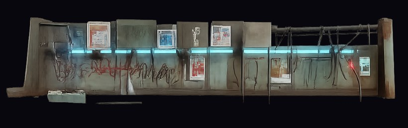
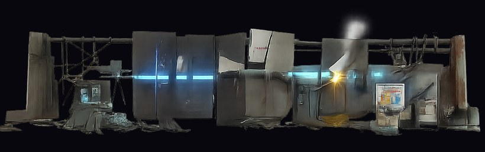
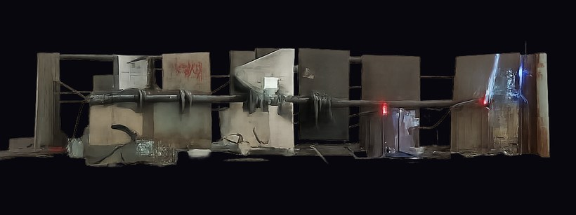
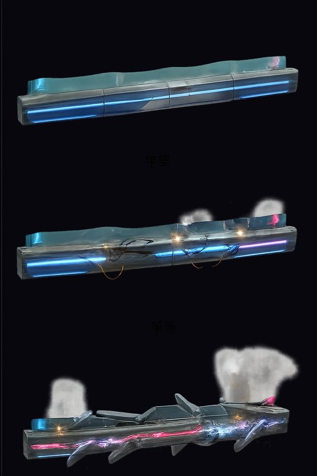
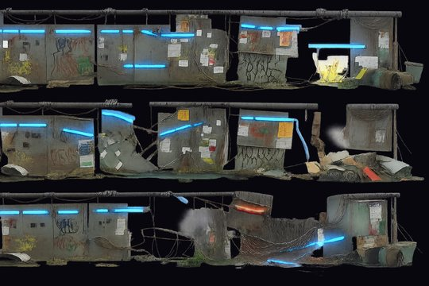
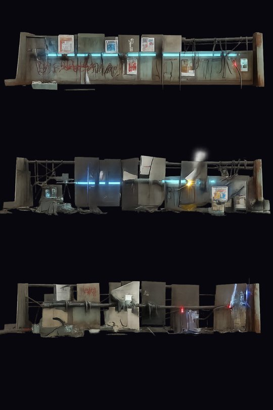
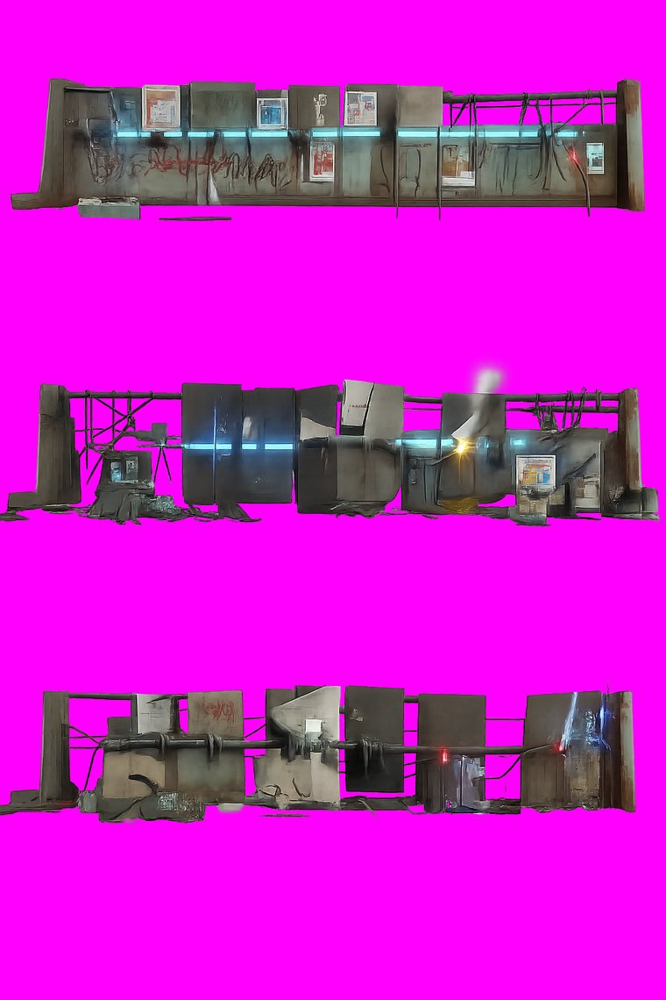

v3 · 三段受損

① 完好 — 霓虹燈管全段亮著、塗鴉與貼紙完整、管線滴水

② 半毀 — 板材錯位鬆脫、燈管中段爆裂、黃色電火花、白色蒸氣

③ 將破 — 結構散開、霓虹幾乎全滅只剩紅點殘光、電纜裸露
- 風格
- 賽博龐克貧民窟：撿來的鐵板拼焊、塗鴉、撕爛的貼紙、私接電線、外露管線、雜物堆
- 去背
- 透明 69.3%，邊緣乾淨
- 本版花費
- $0.40（三版累計 $1.20）
三版怎麼調過來的

v1 乾淨科技風 — 造型與受損分段都對，但太乾淨，不是貧民窟

v2 髒污夠了但壞掉 — 變成街邊牆面不是獨立路障；調性反而變亮成灰白；背景非純黑導致去背失敗（透明只有 38.9%）

v3 採用 — 獨立路障有明確左右端點、三段差異一眼分得出、去背乾淨
- 學到的
- 「深夜、霓虹是唯一光源」與「背景必須純黑」這兩件事沒明講就會出事，已寫進共用風格基底
去背檢查

合成到洋紅：邊緣無 halo、無殘留色圈，三段之間乾淨分離可直接切割
共用風格基底
- 已建立
tools/ai_pipeline/prompts/zl_style_base.txt，槍手／殭屍／Boss／駐守物／場地／特效／UI 全部共用，不再每批重講一次風格（重講必然漂移，而漂移要花錢才會發現）。
- 裡面明確寫死了三件這次踩到的事：深夜暗調、霓虹是唯一光源、背景必須純黑 #000000、主體不可畫成建築立面。
- 風格若要再調，改那一個檔案就好。
下一批
- 三種殭屍走路動畫（walker 重做、runner、brute）
- 3 支影片 × $0.32 = $0.96
- 累計美術花費：吸血鬼 $2.88 + 殭屍 $1.20 = $4.08